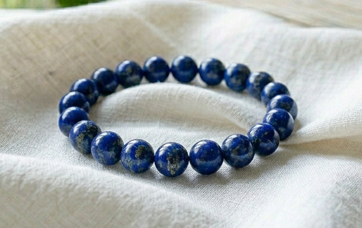
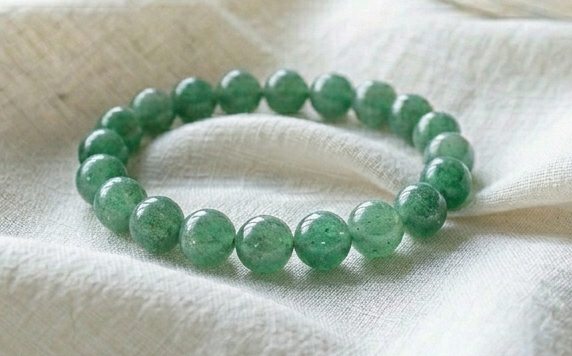
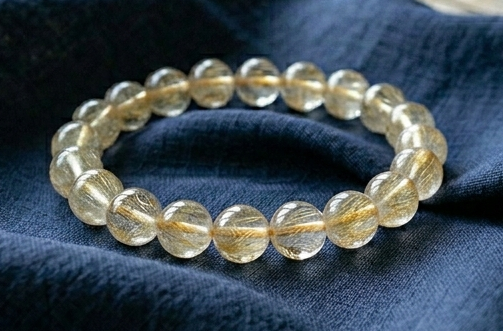

たっちゃん様
詳細のご希望、ありがとうございます。
たっちゃん様のために選んだ石について、
詳しくお伝えしますね。
たっちゃん様の命の流れを視させていただき、
今のたっちゃん様に最も必要な石を3つ選びました。
たっちゃん様は、信頼できる場所・人・環境の中でこそ、
本来の力が一気に開く方です。
折れない芯と、一度決めたら動ける強さを持っている。
でも──
「これで合っているのか」「どこへ向かうか」という問いが
頭の中でぐるぐると繰り返されやすい流れがあります。
2026年の秋に向けて、
「ここだ」という確信が来る流れが
すでに動き始めています。
その流れを最大限に活かすために、
たっちゃん様のエネルギーと
五十猛命（いそたけるのみこと）が
深く共鳴する3つの石を選びました。

深い知恵と真実を引き寄せる石です。
たっちゃん様の「信頼できる場所を見極めたい」という
本質のエネルギーと最も深く共鳴します。
直感と判断力を研ぎ澄ませ、
「本物かどうか」を感じ取る力を高めてくれます。
たっちゃん様の「答えが見えない」という迷いを、
この石がそっと緩めてくれます。

五十猛命と最も共鳴が強い石です。
成長と機会の石で、
「新しい扉が開く」タイミングに
背中を押してくれる力があります。
たっちゃん様の命の流れには、
緑の力──根を張り、芽を出し、大きくなっていく
使命の流れが刻まれています。
アベンチュリンは、その守護を日常の中で
ずっとそばに置いておける石です。
一歩踏み出すとき、背中を押してくれる石です。

縁を引き寄せ、目上の人との縁を強める石です。
たっちゃん様が「また壁を感じる」「なかなか動けない」とき、
この石が、そのループを静かにほどいてくれます。
引き寄せの力を止めるのではなく、
それを「縁がつながる方向」へと整えてくれる石です。
ラピスラズリ・アベンチュリン・ルチルクォーツ。
この3つをたっちゃん様専用に組み合わせて、
一つひとつ手作りで仕上げます。
五十猛命への祈祷とエネルギーチャージを込めて、
たっちゃん様のもとへお届けします。
身につけていくうちに、
「迷いの中でも、芯がぶれない」という感覚が
少しずつ戻ってきます。
「これで合っているのか」と揺れそうなとき、
石が静かにそのループをほどいてくれる。
日常の中で、守護がそばにある。
そして2026年10月〜11月に向けて──
「ここだ」という確信が動き始めるその時期に、
エネルギーが整った状態で臨めるようになります。
たっちゃん様の場合、
2026年10月〜11月から、
「ここだ」という確信と縁の動きが出始める流れがあります。
パワーストーンのエネルギーが
しっかりと馴染むまでには、
通常2〜3週間ほどかかります。
今から始めることで、
ちょうど2026年10月〜11月に
エネルギーが整った状態になります。
今回ご購入いただいた方には：
ご希望の方は、
「ブレスレット希望」とメッセージをお送りください。
ご不明な点があれば、
お気軽にお尋ねくださいね。
たっちゃん様の「ここだ」という確信が、
もうすぐそこまで来ています。